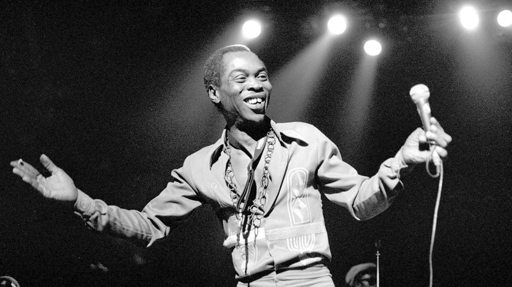

Fela Kuti
FATHER OF AFROBEAT(A MUSICAL AND SOCIOPOLITICAL VOICE OF INTERNATIONAL SIGNIFICANCE)

Nigerian, Multi-Instrumentalist, Bandleader, Composer, Political Activist and Pan-Africanist
Here's a time line of Fela Kuti's life:
- 1938 -Born on October 15 in Abeokutu, the modern-day capital of Ogumm State in the Federal Republic of Nigeria
- Original Name -Fela was born as Olufela Olusegun Oludolun Ransome-Kute
- 1958 -Fela attended Abeokuta Grammar School. Late He was sent to London to study medicine , but decided to study music at the Trinity College of Musis.
- 1960 -Fela married his first wife Remyekun Taylor with whom they have three children.
- 1967 -Fela went to Ghana for a new musical direction, it was then that Kuyi called his music Afrobeat, a combination of highlife, funk, jazz, salsa, calypso and the traditional Nigerian Yoruba music.
- 1969 -Fela took the band to the United States where they spent 10 months in Los Angeles
- 1970 -After Fela and his band returned to Nigerian, the group was renamed "The Afrika'70 ". He formed the Kalukuta Republic, a commune, a recording studio and a home for the many people connected to the band and He later declared indepedent from the Nigerian State.
- 1972 -Kuti became more involed in Yoruba religion.
- 1977 -Fela and the Afrika'70 released the album ZOMBIE, a scathing attack on Nigerian soldiers using the zombie metaphor to describe the methods of the Nogerian Military.
- 1977 -Fela was severely beaten and his elderly mother was thrown from a window causing fatal injuries.The Kalakuta Republic was burnt abd Fela's studio, instruments and master tapes were destroyed. During that year, He wrote two songs "Coffin for Head OF State" and "Unknow Soldier"
- 1978 -He married 27 women, many of whom were his dancers, composers and singers
- 1978 -That year also marked by two notorious concerts, they first in Accra which riots broke out during the song "Zombie" which lead to Fela being banned from entering Ghana. The second was at the Berlin Jazz which most of Fela's musicians deserted him due to rumours that Fela was planning to use the entire proceeds to fund his presidential campaign.
- 1978 -He formed his own party called Movement Of the People(M.O.P) in order to clean up society like mop. M.O.P preached Nkrumahism and Africanism.
- 1979 -He put himself forward for president in Nigeria's first elction after 20 years.-
- 1979 -Fela created a new band called Egypt'80 reflecting the idea that Egyptian Civilization , Knowledge, Philosophy, Mathematics, and religious systems are African and must be claimed as such.
- 1984 -Muhammadu Buhari's government of which Kuti was a vocal opponent jailed him on a charge of currency smuggling with Amnesty Internation and others denounced as politically motivated .
- 1984 -On his relase He divorced his 12 remaining wives saying "marriage brings jeolousy and selfishness."
- 1986 -Fela performed in Giant stadiums in New Jersey
- 1989 -Fela and Egypt'80 relased the anti-aparthied Beast of No Nation that depicts on it cover U.S. President Ronald Reagen, U.K Prime Minister Margarent Thateher and South African President Betor Wllem Botha; the title of the composition erobed out of a statement by Botha 'This uprising will bring out the beast in us.'
- 1997 -fela Kuti died on August 3 from complications related to HIV/AID
Yes, if you are in England, the music can be an instrument of enjoyment .You can sing about when you are going to build with the next lady.But in my own environment, my society is underdeveloped because of an alien system on our people.So there is nothing like no music enjoyment. There is something like struggle for people's existence.
--Fela Kuti ~Intone footage on Focus of Africa on CGTN Africa.
If You Have Time, You Should Read More About This Incredible Human Being On His Wikipedia Entry .